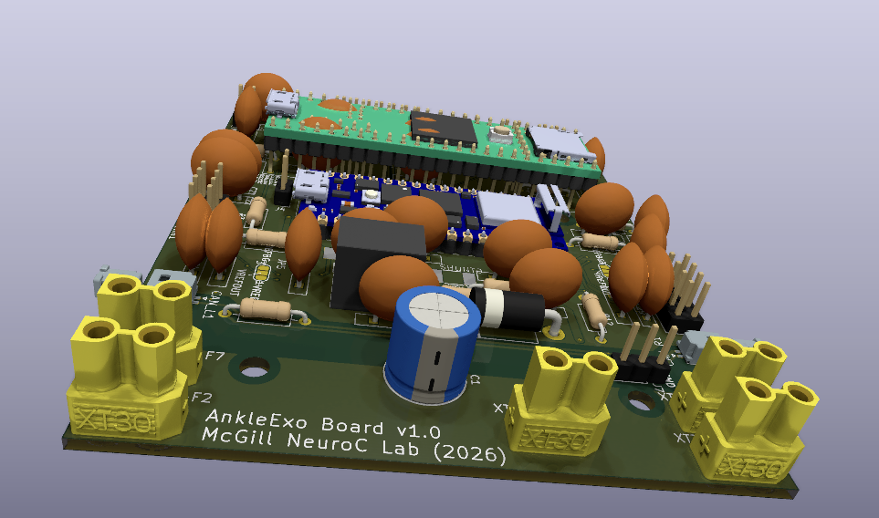
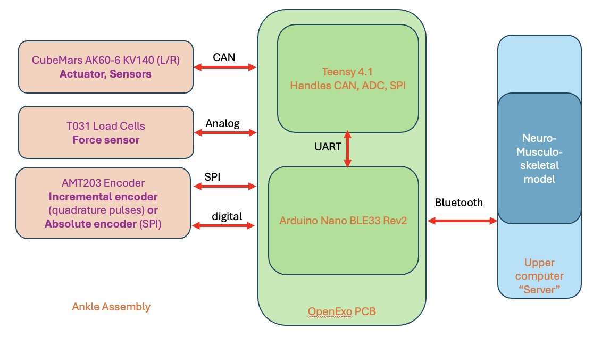
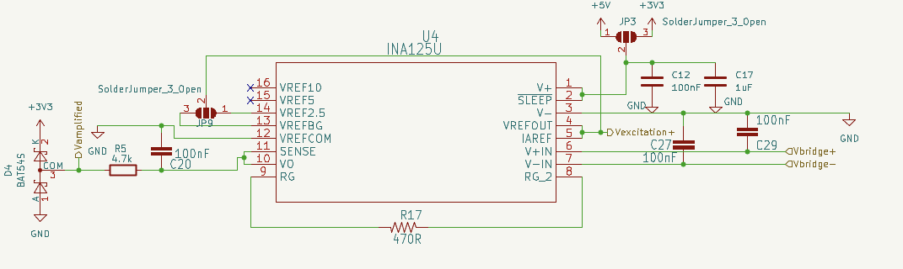
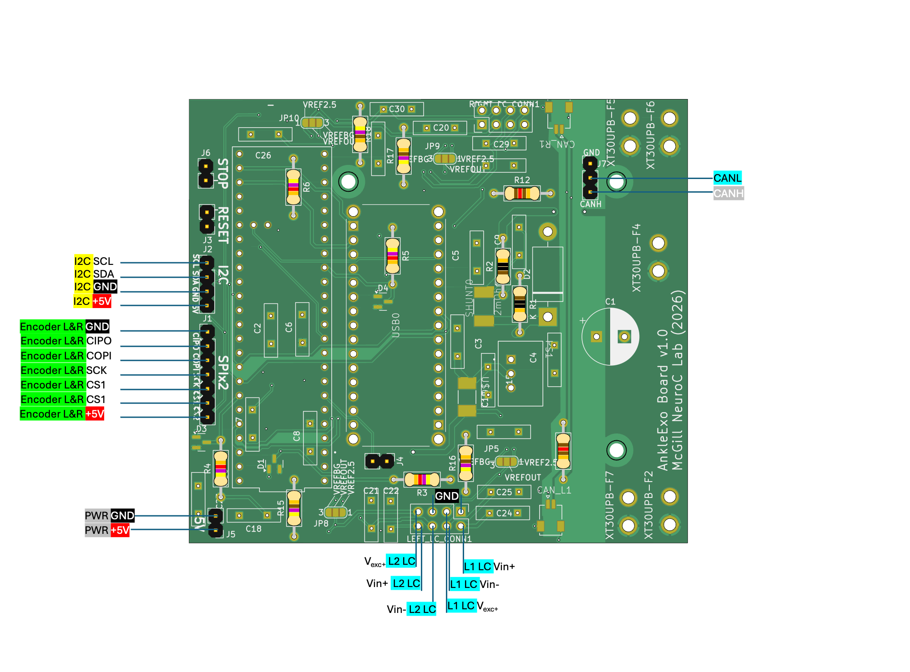
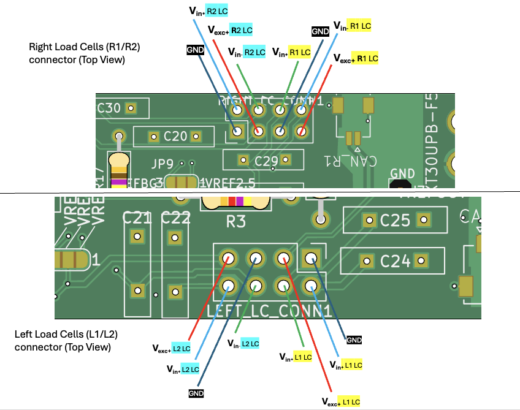

The PCB design
Our ankle exoskeleton design has different requirements than the original OpenExo design. In particular our exoskeleton differs on the following points :
- We are using 4x load cells, whereas the original board only accomodates 2x strain gauge amplifiers (INA125U)
- Our design adds two AMT203 encoders which will most likely be operated over SPI. The original board does include SPI headers near the edge of the board, however the choice of SMT type headers make it incompatible with jumper wires. In addition our encoders work over 5V, which is incompatible with the 3.3V teensy.
Following those specific requirements, we brought the following changes to the board.
- Added two unidirectional voltage shifters for SPI operation at 5V (TXU0104PWR, TXU0304PWR)
- Added 2 extra strain-gauge amplifiers (INA125U)
- Used normal pin headers for SPI and included a second CS pin (because there are two encoders)

A summary of the PCB's role in the ankle exoskeleton is shown in the following diagram :

Strain Gauge amplifier design :
The strain gauge amplifier instrumentation amplifier (INA125U) amplifies the voltage difference between the VIN- and VIN+
Where the gain has expression : \(G = 4 + \frac{60k}{R_g}\) We kept the original OpenExo gain resistor \(R_g = 470\) thus the gain is about 132.

In the original OpenExo design, the \(V_{REF}{OUT}\) pin is connected to \(V_{REF}{BG}\) which sets the excitation voltage to the bandgap reference voltage (1.24V). The load cell datasheet suggests that a minimum of 5V excitation voltage may be used. Even when powering the INA125U the highest excitation voltage that can be achieved is 2.5V.
For the iteration v1.0 I chose thus to add some flexibility to the choice of \(V_{REF}{OUT}\). Using a 3-pin SolderJumper (JP9,JP3) one can either set the excitation voltage to 1.24V or 2.5V, and the power pin of the IC can be set to 3.3V or 5V (JP3).
In order to allow for the possibility to use \(V_{REF}{5}\) or \(V_{REF}{10}\) I would have to power the chip with a voltage above 5V, or the onboard DC-DC regulator only supplies 5V. Another option could be to connect the INA125U directly to the battery power line but this might introduce some noise and transients from the battery loading the power lines.
The BAT54S is a Diode Array meant to clamp the output voltage in case it exceeds 3.3V, because the Teensy only accepts voltages up to 3.3V.
The IAREFF pin sets the voltage offset (see equation(1) ). Since the load cells will only be pulled (tensile force) in one known direction, the polarity of the bridge sensing voltages can be set so that the output voltage will always be below IARREF.
Then we can use a IAREFF value near 1.3V, and then the full band range will be between that value and 0V.
Load-cell full-scale differential output = sensitivity × excitation voltage
The datasheet for the T031 load cells specifies
Sensitivity = 1.0 mV/V nominal
Rated force = 1000 N
Here is a table that gives the required gain for a given excitation voltage. The highest excitation that can be achieved with the onboard precision reference is 2.5 V, and with a gain of 132, that gives us a full-scale signal of 330 mV.
The desired gain is calculated as \(\text{Target gain} = \frac{3.3 V}{\text{full scale signal}}\)
| Excitation voltage | Load cell full-scale signal | Target gain for 0–3.3 V range | Target gain resistor value |
|---|---|---|---|
| 2.5 V | 2.5 mV | 1320 | 45.6 Ω |
| 3.3 V | 3.3 mV | 1000 | 60.2 Ω |
| 5 V | 5.0 mV | 660 | 91.5 Ω |
| 10 V | 10.0 mV | 330 | 184.0 Ω |
The two parameters that we can modify to increase the full scale signal range are 1) the gain and 2) the bridge excitation voltage
Force conversion formula
We assume that the load cells are linear. Therefore, the following equality holds:
where \(FS\) means full scale.
For example, the rated full-scale force of the load cell model is typically:
The full-scale differential voltage is given by:
Therefore, for an applied force \(F_{applied}\), the output voltage is:
Rearranging the equation:
Solving for the applied force:
Thus, the applied force can be computed from the measured output voltage as:
Pinout of the PCB

Pinout for the load cells connectors :

PCB changelog
26/06 (version 1.0.0)
- Refactored labels for INA solder jumpers by aligning the labels on a "45degrees" plane so that we can distinguish those labels from other things on the board (clearer for reading)
- Added a solder jumper for INA excitation voltage to choose between the INA voltage reference (2.5v/BG) or 5V from PCB regulator
- Added a solder jumper to choose whether to connect the Teensy's VIN to the board (so that we can use USB)
03/07 (version v1.0.1)
- Modified the Teensy 4.1 footprint to include two 1x24 PinSocket rows so that we can include the pin socket soldering into PCBA for JLCPCB
- Added a status LED for the 5V power line
- Make sure to check for unconnected zones
- Modified the pinout order for the SPI header (it is now from left to right
GND,SCK,COPI,CIPO,CS1,CS2,5V) - Make sure to check the option
Subtract soldermask from silkscreen: this will tell KiCad to automatically remove silkscreen graphics/text wherever they overlap exposed copper pads which might otherwise cause manufacturing issues - **MAIN PATCH : ** Re-routed the TXU304 and TXU0104 input / output pins to resolve mismatch in version v1.0.0. The inputs were misconnected to outputs which made the SPI non functioning on version v1.0.0. The SPI bus has fixed direction ports (COPI, SCK, CS go from controller to peripheral, while CIPO goes from peripheral to controller) but the order was mismatched in version 1.0.0
Before the patch .1
 After the patch
After the patch .1

04/07 (version v1.0.1)
- connected excitation voltage outputs of the 4 INA125U to Teensy's Analog inputs so that the Teensy can ensure the INA125Us are properly wotking and that these match the settings in Board.h
17/07 (version v1.1.0)
- Replaced erroneous Arduino Nano (BX00028=Nano Every) symbol+footprint with corresponding model (the BX00071=Nano BLE33 R2). Check that the older versions (<v1.1.0) are not affected, especially UART b/w Teensy and Nano
- Redesigned the load cell sampling circuit to use the Arduino Nano's builtin SAADC in differential mode. The advantages are :
- The Teensy 4.1's analog pins are known to be noisy so the Nano naturally becomes a more stable option
- The differential mode (where IN+=Vexc and IN-=INA125U output) simplifies the
Board.hconfiguration. The code no longer needs to know what voltage is each IAREF at, since the differential ADC extracts the differential voltage - The differential mode also improves signal integrity by rejecting the common-mode noise picked up by the lines on the PCB.
- The differential mode eliminates any IAREF voltage drifts / offsets ACCROSS and WITHIN all four INA125Us. The code assumed that the IAREF voltages were exactly 2.5V or 1.24v but in practice soldering quality and trace impedance can affect that by introducing some variability between the IAREF of each respective INA125U
- The Arduino Nano's SAADC features a PGA stage which makes this setup more flexible to changing
Rggain resistors. We can optimize the dynamic range to improve resolution. - Redesigned the
LEFT_LC_CONNandRIGHT_LC_CONNpinout so that 1) they are identical (versions < v1.1.0 had distinct pinouts) 2) they are SYMETRICAL which means the 2x4 connector can safely be flipped, only the load cell will be swapped. PCB assembly list :
https://jlcpcb.com/help/article/how-to-generate-the-bom-and-centroid-file-from-kicad